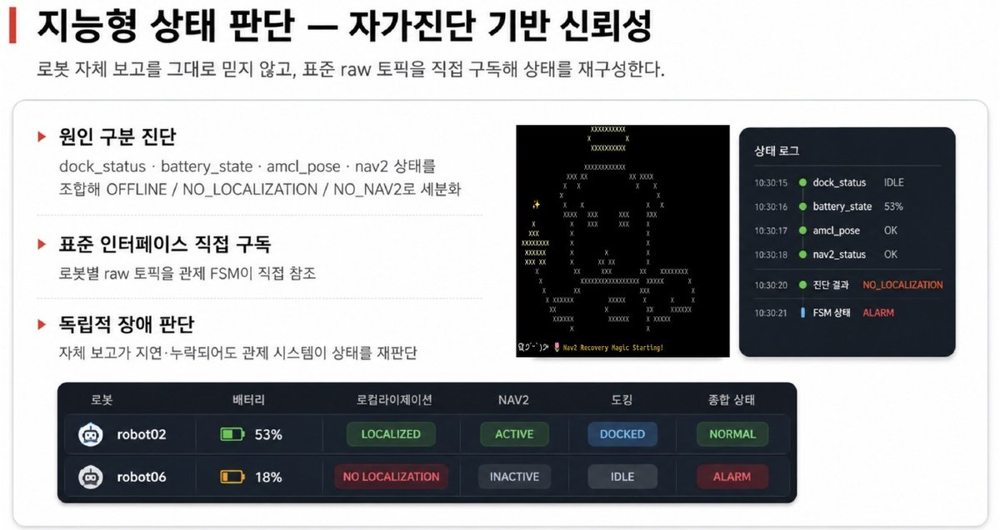

Last modified
한눈에 보기
1분 시연 영상
- 내 담당 — 관제 FSM과 AMR 연동(5인 팀 팀장) · 출동할 수 있는 로봇 가려내기 · 지난 명령 걸러내기(공동작업) · 실물 주행 설정 조정
- 목표 — 제조 현장 안전사고의 발견·초동 대응 지연 줄이기 · 쓰러짐·안전모 미착용 감지 → 가장 가까운 이동로봇 출동 · 평소에는 순찰
- 장비 — TurtleBot4 AMR(자율주행 이동로봇) 2대 · 천장 웹캠 2대
- 감지와 출동의 구분 — 천장 카메라 감지(팀) / 관제 FSM: 출동할 로봇 선정 / AMR: 출동·순찰 이동
프로젝트 구현
천장 카메라와 이동로봇 두 대를 통신으로 묶어, 위험 상황이 생기면 로봇을 보내고 평소에는 순찰하게 하는 공장 안전 시스템입니다.
위험 상황 접수와 가장 가까운 로봇 출동 (관제 FSM · Nav2)

카메라 감지나 관제 웹 버튼으로 위험 상황이 들어오면 관제 FSM이 먼저 출동할 수 없는 로봇을 뺍니다. 저는 남은 로봇 중 사람에게 가장 가까운 로봇에 출동 명령을 보내도록 만들었습니다. 안전모 미착용일 때는 바로 움직일 수 있는 대기 로봇이 있으면 그중 가까운 로봇을 먼저 고르게 했습니다.
쓰러짐은 가장 급하고 순찰은 평소 일인 반면, 안전모 미착용은 조치가 필요하지만 순찰 중인 로봇을 빼 올 만큼 급하지는 않다고 보았고, 대기 로봇을 보내 로봇마다 역할이 나뉘는 모습을 보여 주고자 했기 때문입니다.
순찰 중 소화기 표식 점검과 기록 (ArUco · SQLite · Flask 웹, 팀 작업)

팀은 로봇이 순찰 중 소화기 지점에 도착했을 때만 ArUco 마커(카메라가 번호를 읽을 수 있게 만든 흑백 사각 표식)를 찾아, 점검 결과와 사진을 데이터베이스에 남기고 웹 화면에서 조회할 수 있게 했습니다. 이 점검 기능과 출동·순찰을 맡은 로봇 실행 프로그램을 하나로 합치는 일은 남은 과제였습니다.
천장 카메라 화면과 로봇 지도 맞추기 (호모그래피)
팀은 카메라 화면과 지도에서 같은 지점을 가리키는 점들을 짝지어 호모그래피(영상 평면을 지도 평면으로 옮기는 변환)를 구했습니다.
안전모 착용 판정 (YOLO 자세 추정 · 안전모 검출, 팀 작업)
팀은 안전모가 화면에 보이는지만이 아니라, 사람의 머리 위치(자세 추정으로 찾은 기준점)와 안전모 영역이 실제로 겹치는지를 따져 착용 여부를 판정했습니다.
진행 과정 각 번호를 펼치면 자세한 설명이 나옵니다
동기
- 과제 조건부트캠프가 정한 조건 — 로봇 간 협업 · 감지·AMR 제어 · 시스템 모니터
- 주제 논의(팀)후보 세 개 중 제가 처음 제안한 공장 화재 감지·순찰 로봇 + 팀원의 웹캠 활용 시나리오 → 지금의 주제로 좁힘
구현 과정
출동할 수 있는 로봇 가려내기
목적관제가 지금 움직일 수 있는 로봇을 알아야 가장 가까운 로봇을 보냄한 일로봇이 원래 내보내는 표준 토픽 수신 = 생존 신호 · 위치 정보 없음 · 주행 프로그램 없음 → 출동 후보에서 제외현장 조정Wi-Fi에서 오프라인으로 깜빡임 → 오프라인으로 보기까지 기다리는 시간 늘림결과제외 이유를 관제 웹에 표시
토픽 수신을 생존 신호로
로봇이 따로 '살아 있다'는 메시지를 보내지는 않아, 관제에서 배터리·도킹·위치 추정·주행 상태 토픽이 들어오는지를 생존 신호(heartbeat)로 삼았습니다. 위치 정보가 들어오지 않거나 주행 프로그램이 떠 있지 않은 로봇은 출동 후보에서 뺐습니다.


출동 전 확인표와 프로그램 목록
상태마다 할 조치는 팀에서 출동 전 확인표로 묶어 함께 썼습니다. 그런데 각 기기가 자기가 받아 보기로 한 신호만 확인하는 통신 방식 탓에 관제 PC가 실행 중인 프로그램 목록을 다 보지 못해, 멀쩡한 로봇도 주행 기능이 없다고 판정되어 출동을 배정받지 못했습니다. 팀에서는 관제 PC가 전체 목록을 빠짐없이 확인하는 역할로 설정을 고정하고 점검 절차를 문서로 남겼습니다.
Wi-Fi에서 깜빡인 오프라인
부트캠프 Wi-Fi에서는 정상 순찰 중인 로봇이 오프라인으로 깜빡여, 저는 신호가 끊긴 뒤 오프라인으로 보기까지 기다리는 시간을 늘렸습니다.
상태 판정의 기준은 로봇이 실제로 내보내는 신호에 두고, 그 기준이 현장 통신 조건에서 흔들리면 다시 맞춰야 한다는 것을 익혔습니다.
지난 명령 걸러내기(구현은 공동작업)
문제마지막 명령을 남겨 두는 전달 방식 → 나중에 켜진 로봇이 끝난 상황의 좌표로 출동할 수 있음맡은 일메시지 성격별 전달 방식(QoS) 나누기 설계에 직접 관여방법명령에 보낸 시각 · 로봇 쪽에서 30초 지난 명령은 버림한계보낸 시각이 없거나 읽지 못한 명령은 거르지 못함
보낸 시각과 30초 기준
관제가 로봇에 보내는 명령은 나중에 켜진 로봇도 받도록 마지막 명령을 남겨 두는 방식이라, 로봇이 이미 끝난 상황의 좌표를 받아 엉뚱한 곳으로 출동할 수 있었습니다. 그래서 관제에서 로봇으로 가는 명령에 보낸 시각을 함께 실어, 로봇 쪽에서 30초가 지난 명령은 버리게 했습니다.
보낸 시각이 없는 명령
보낸 시각이 없거나 읽지 못한 명령은 이 방식으로 거르지 못한다는 한계도 남아 있습니다.
문제해결
실물 주행 문제와 통신 분석
문제 파트실물 로봇 주행(Nav2) · 위치 추정·자율주행 통신문제새로 갱신한 장애물 지도에 갇혀 움직이지 못함 · 위치 추정·자율주행이 실행 도중 멈춤해결로봇 반경 · 장애물 주변 여유 거리 · 지도 갱신 주기 직접 조정(실물 전환 전체는 팀)사후 분석실행 도중 멈춤 → 부트캠프 뒤 원인 후보 정리 · 비교 실험 계획
로봇 반경과 여유 거리 설정
Nav2 설정을 실물 로봇에 맞게 바꾸는 작업 전체는 팀에서 진행했고, 저는 로봇 반경·장애물 주변 여유 거리·지도 갱신 주기 같은 주행 설정을 직접 조정했습니다.
부트캠프 뒤 분석 과제
실행 도중 멈추던 문제는 일정 안에 통신 설정을 바꿔 시험하기 빠듯해 부트캠프 뒤의 분석 과제로 남겼고, 적용과 실측은 하지 않았습니다.
원인 후보와 비교 실험 계획
부트캠프 뒤에는 공식 문서와 비슷한 장애 사례를 대조해 통신 탐색·서비스 통신, 이름 공간·좌표 변환(TF) 충돌, Nav2 초기화, QoS, Wi-Fi 혼잡·연산 자원으로 원인 후보를 나누고, 기본 탐색 방식·Fast DDS Discovery Server·CycloneDDS와 Zenoh 조합을 비교하는 실험 계획을 세웠습니다.
팀에서 일한 방식
- 팀 구성5인 · 각자의 역량과 흥미 기준 — 감지 / 로봇 제어·마커 점검 / DB(점검 기록 저장)·웹 / 관제 FSM과 AMR 연동(제 담당)
- 소통매일같이 잡힌 강사 평가 준비로 수시 회의
- 강사 평가요구사항 발표 · 스프린트(기능별로 나눈 짧은 개발 기간)마다 설계·코드·테스트 리뷰
- 팀 약속토픽 세 단계 — 관찰(사람 위치) · 요청(관제 접수) · 명령(로봇 이동) / 로봇 2대 운용 → 팀이 실행 노드에 로봇 이름 지정
본인 담당:
- 관제 FSM과 AMR 연동 맡은 이유 팀장으로서 각 노드(기능별 실행 프로그램)를 이해하고 FSM으로 잇는 일이 맞다고 봄
- 실기 값(도킹 좌표·대기 시간)을 별도 설정 파일로 빼자고 제안 팀 사용 팀은 코드를 건드리지 않고 설정 파일만 바꿔 다시 실행하는 방식으로 실기 시험에 함께 씀
배운 점
- 깨달음상태 판정의 기준은 로봇이 실제로 내보내는 신호에 두되, 그 기준이 현장 통신 조건에서 흔들리면 다시 맞춰야 한다
기술 상세
팀 발표 자료(세부 기술): 발표 자료(PDF, 58쪽)
발표 자료 목차·키워드: 프로젝트 개요 p4 · 감지에서 출동까지 흐름 p7 · 수행 절차 p14 · AMR·ArUco p16 · 웹캠 감지 p23 · 관제 FSM 상태 판단 p40 · 우선순위 배정 p41 · 웹 관제 대시보드 p44 · 관제 FSM 구조 p45 · 데이터베이스 p47 · 자체 평가 p57
코드 근거
Rokey_intelli1 — 팀 최종 코드(README가 코드 구성과 한계를 설명합니다)